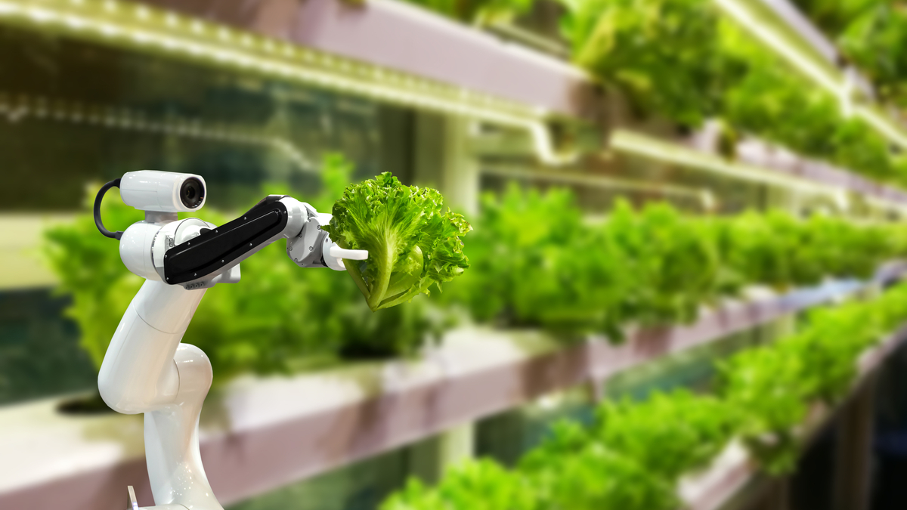
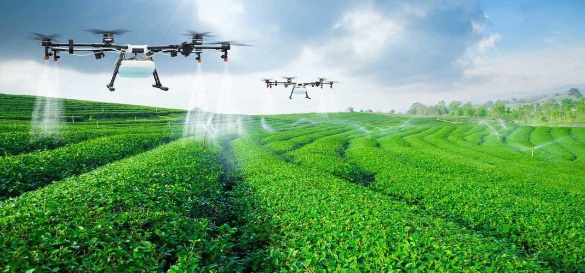
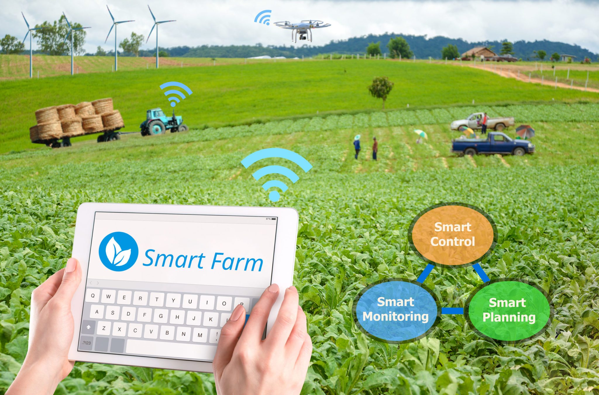

🕹️ आयओटी बेस्ड शेती पाणी व्यवस्था
तर आम्ही आमची आयओटी आधारित शेती पाणी प्रणालीच्या मोबाईल अनुप्रयोगातील बटण दाबतो तेव्हा आमची नवीन कल्पना आहे चालू होईल आणि आपल्या शेतातील पाण्यामधून पाणी वाहू लागेल आणि एकदा पाणी पाण्याने भरले की बजर वाजू शकेल. बझर वाजताच पाणी आपोआप वाहणे थांबेल किंवा अन्यथा आम्ही आपल्या मोटरचे पॉवर ऑफ बटन दाबूनही पाण्याचा प्रवाह थांबवू शकतो.
🎯 शीर्ष 5 अलीकडील कृषी शोध
अलीकडील काही वर्षांत बरीच तांत्रिक प्रगती पार केलेल्या उद्योगांपैकी शेती हे एक चांगले उदाहरण आहे. विशेषत: अचूक शेती, ज्यात ड्रोन, सेन्सर, मोठा डेटा, पर्यावरण नियंत्रणे, शेती व्यवस्थापन सॉफ्टवेअर, स्मार्ट पॅकेजिंग आणि बरेच काही यांचा समावेश आहे ज्यामुळे डिजिटल युगात मोठ्या प्रमाणात झेप झाली आहे.
येथे आम्ही जगातील शेती बदलत असलेल्या पाच नाविन्यपूर्ण कृषी तंत्रज्ञान आणि पद्धतींचा आढावा घेत आहोत.
1. मधमाश्या आणि drones
हवामानातील बदल जर सुरूच राहिले तर शास्त्रज्ञांनी चेतावणी दिली की अन्नधान्याची कमतरता भावात वाढण्याची शक्यता आहे. या कारणास्तव, सार्वजनिक आरोग्य अधिकारी अन्न साठा कमी करण्यासाठी आणि शेतीच्या वैकल्पिक मार्ग शोधण्याकडे लक्ष देत आहेत.
ड्रोनचा शेतीत बरीच उपयोग आहे, परंतु नुकतीच एक समस्या मीडियामध्ये आली आहे ती मधमाश्या अदृश्य होण्यामागील आहे. खरंच काही प्रजाती नष्ट होण्याचा धोका देखील आहेत. हे संकटमय होईल कारण मधमाश्या परागकण म्हणून महत्वाची आर्थिक भूमिका निभावतात आणि सध्याच्या कृषी उत्पादनाची पातळी टिकवून ठेवण्यास मदत करतात.
उर्वरित मधमाश्या पूर्ण होत आहेत अशा परागकण प्रयत्नांना आशेने पूरक होण्यासाठी आता भाग्यवान, ड्रोनचा उपयोग प्रयोगांमध्ये केला जात आहे. शेतींनी ड्रोन वापरण्यास सुरवात केली आहे त्यामध्ये स्वयंचलित पीक कापणी, एरियल ड्रोन फोटोग्राफी आणि संभाव्यत: डिलिव्हन्स ड्रोन देखील आहेत.
2. कृत्रिम बुद्धिमत्ता, ऑटोमेशन आणि इंटरनेट ऑफ थिंग्ज
ड्रायव्हिंगचे भवितव्य काय आहे हे कोणालाही विचारा आणि बहुतेक लोक ड्राइव्हरविरहित मोटारींविषयी बोलू जेथे एआय पूर्ण नियंत्रण ठेवते. लोक जे सहसा कमी विचार करतात ते शेतात ड्रायव्हर रहित वाहने आहेत. असे असले तरी अमेरिकेतील स्मार्ट अॅग या कंपनीने आपले वाहन चालक ट्रॅक्टर तंत्रज्ञान “ऑटोकार्ट” सॉफ्टवेअरच्या रूपात जाहीर केले आहे. हे सॉफ्टवेअर धान्य कार्ट ट्रॅक्टर पूर्णपणे स्वयंचलित करेल, ज्यामुळे व्यस्त कापणीच्या हंगामात शेतक very्यांना त्यांचे स्वागत होईल. या अभिनव तंत्रज्ञानाच्या चरणांमुळे शेतक farmers्यांना त्यांची विद्यमान उपकरणे स्वयंचलित करण्याची क्षमता व कार्यक्षमता देखील अनुमती मिळेल.
ऑटोकार्ट सॉफ्टवेअर खरं तर एक क्लाउड-आधारित प्लॅटफॉर्म आहे, याचा अर्थ असा की ही स्वयंचलित कृषी वाहने वस्तूंच्या जागतिक इंटरनेटचा भाग बनतील (आयओटी). मूलत: तथापि, स्वयंचलित वाहने ही कृषी क्षेत्रातील आयओटी इनोव्हेशन आणि मशीन लर्निंगचा एक छोटासा तुकडा आहे. व्हॉईस रेकग्निशन, मशीन व्हिजन आणि उदाहरणार्थ तपमान सेन्सरच्या संयोजनाचा वापर करणारी एक नवीन एआय सिस्टम आता डुकरांच्या आरोग्यासाठी, कल्याण आणि स्थानाचा मागोवा घेण्यासाठी चाचणी केली जात आहे. एआयच्या वापराच्या इतर प्रकरणांमध्ये असंख्य तंत्रांचा वापर करून पिकांमध्ये अत्यंत प्रगत रोग शोधणे समाविष्ट आहे.
ही सर्व रोमांचक सामग्री आहे, परंतु हिमशैलची केवळ एक टीप आहे. एआयची खरी क्षमता बरीचशी अद्याप समजू शकली नाही आणि अद्याप फील्ड अगदी बालपणातच आहे.
3. ब्लॉकचेन तंत्रज्ञान
क्रिप्टोकरन्सी फायनान्सच्या क्षेत्रात ब्लॉकचेनबद्दल बर्याच लोकांनी ऐकले असेल, कृषी जग या नवीन तंत्रज्ञानाचा वेगळ्या प्रकारे समावेश करण्यास सुरवात करीत आहे.
शेतीमधील लवकरात लवकर ब्लॉकचेन अनुप्रयोग पुरवठा साखळी आणि शोध काढण्याच्या बाबतीत होते; पिकांची स्थिती कापणीपासून वितरणापर्यंत, ब्लॉकचेन वापरून नोंदविली गेली आणि अद्ययावत केली जाऊ शकते. विशेषत: मोठ्या ऑपरेशन्सचा याचा वास्तविक फायदा एक सुरक्षित, अत्यंत अचूक खात्मा आहे जिथे ट्रांझिटमध्ये काहीही कधीही गहाळ होत नाही. विशिष्ट शेतक to्याशी संबंधित सर्व पिकांचा वास्तविक वेळेत शोध घेतला जाऊ शकतो.
ब्लॉकचेन संसाधन व्यवस्थापनासाठी देखील वापरली जाऊ शकते, उदाहरणार्थ इतर सेन्सर आणि उपकरणे ट्रॅक करणे किंवा यंत्रसामग्रीच्या नोंदी राखण्यासाठी.
4. शहरी शेती आणि उभ्या शेती
विशेषत: शहरी शेतीबद्दल मोठी गोष्ट म्हणजे बर्याच मर्यादित शेती क्षेत्राचा योग्य वापर कसा करावा. शहरी शेती स्वभावाने अगदी लहान असू शकतात आणि अक्षरशः फक्त मैदानी पारंपारिक समुदाय बाग असू शकतात. तथापि ते पर्यावरणाद्वारे नियंत्रित, स्वयंपूर्ण शेंगा अर्पण करून देखील अत्यंत मूल्यवान असू शकतात. कधीकधी ते एकमेकांच्या वर देखील स्टॅक केलेले असू शकतात - अनुलंब शेती म्हणून ओळखले जातात. आणि तुलनेने लहान आकार असूनही, अनुलंब शेतीतून मिळणारे उत्पादन पारंपारिक शेतीच्या तुलनेत दहापट अधिक कार्यक्षम असू शकते. जरी अनुलंब शेती आमच्या डोक्यावर शेती करण्याच्या मार्गाचे आश्वासन देत नाही, परंतु कार्यक्षम, उत्पादनक्षम शेती पध्दतीमध्ये ती मोठी प्रगती करू शकते.
पारंपारिक शेतकरी अनुलंब शेतक and्यांकडून त्यांच्या डिझाइन आणि बांधकाम रचनांमध्ये बरेच काही शिकू शकले, उत्पादन वाढवण्यासाठी आणि कचरा कमी करण्यासाठी स्मार्ट डिझाइन बनवण्याद्वारे.
जगाची लोकसंख्या जसजशी वाढत आहे आणि अधिक जागा घेतात, तसतसे आपल्याला खायला मिळावे म्हणून अवकाशातील जागा आणि शेतीतील कार्यक्षमता अधिक आवश्यक बनतील. दुर्दैवाने, आपण किती बुद्धीने डिझाइन केले आणि आपण किती उंचावर उभे आहोत याचा विचार केला नाही तरी पर्यावरणावर मानवांचा मोठा परिणाम होत आहे. केवळ या क्षेत्रात तांत्रिक प्रगती सुरू राहिल्यास भविष्यात आपल्या स्वतःच्या शेतीविषयक मागण्या पाळण्याची कोणतीही संधी आम्हाला मिळू शकते.
5. अनुवांशिक संपादन
वैज्ञानिकांनी आता अनुवांशिक “शस्त्रक्रिया” करण्यासाठी सीआरआयएसपीआर / कॅस 9 चा वापर करण्यास सुरवात केली आहे. हे त्यांना डीएनएच्या स्ट्राँडवर विशिष्ट अनुवंशिक अनुक्रम बदलून किंवा काढून टाकून एखाद्या जीवाचे जीनोम ओळखण्यास आणि त्यात बदल करण्यास अनुमती देते. आता, सीआरआयएसपीआर जनावरांचा आकार नियंत्रित करण्याच्या तसेच त्यांच्याद्वारे तयार होणार्या मिथेनचे प्रमाण कमी करण्याच्या उद्देशाने गायीच्या आतड्यांतील सूक्ष्मजंतू बदलण्यासाठी वापरला जात आहे. अशा प्रकारे गायींच्या मायक्रोबायोम्सचे समायोजन केल्यास कमी अन्नावर जास्त मांस तयार होऊ शकते. यामुळे पर्यावरणाची कार्यक्षमता आणि नफा वाढते.
कमी पाण्यावर भरभराट होऊ शकते आणि जास्त धान्य मिळू शकेल अशा पीकांचे शास्त्रज्ञांनीसुद्धा काम सुरू केले आहे. अर्थात, कोणत्याही परिसंस्थेत अनुवांशिक गोष्टींबरोबर गडबड केल्याने तेथे उद्भवू शकत नाही - आपण सावधगिरी बाळगली पाहिजे की आपण सोडवण्यापेक्षा जास्त समस्या निर्माण करीत नाही.



📧 अधिक माहिती...
📍 आपल्याकडे आयओटी किंवा तांत्रिक शेतीशी संबंधित काही नवीन कल्पना असल्यास, कृपया आमच्यासह सामायिक करा ...
📞 संपर्क साधा
वैशिष्ट्यीकृत पोस्ट

कृषी सुविधांमध्ये संपूर्ण होल्डिंगपासून ते आस्थापनांपर्यंतच्या सुविधांचा समावेश आहे.

खरंच, शतकानुशतकाच्या सर्वात मोठ्या शेतीच्या विस्ताराच्या शेवटी, शेतक of्याची कोंडी ही एक मोठी समस्या बनली होती.

शेतात, आयओटी शेतातील डिव्हाइसवर सर्व प्रकारचे डेटा दूरस्थपणे मोजण्याची आणि वास्तविक वेळेत ही माहिती शेतक to्यास पुरविण्याची परवानगी देते.

शेती हा भारताच्या अर्थव्यवस्थेचा उल्लेखनीय भाग आहे, कारण त्यामध्ये संपूर्ण जीडीपीच्या 18 टक्के वाढ होते.

आपल्याला जे करायला आवडते ते करा आणि आपल्याला स्मित करा.